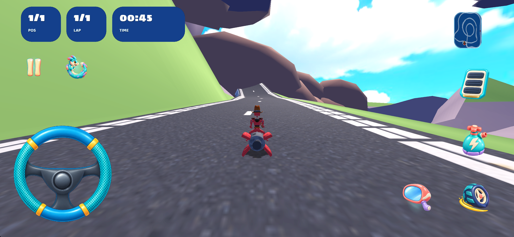
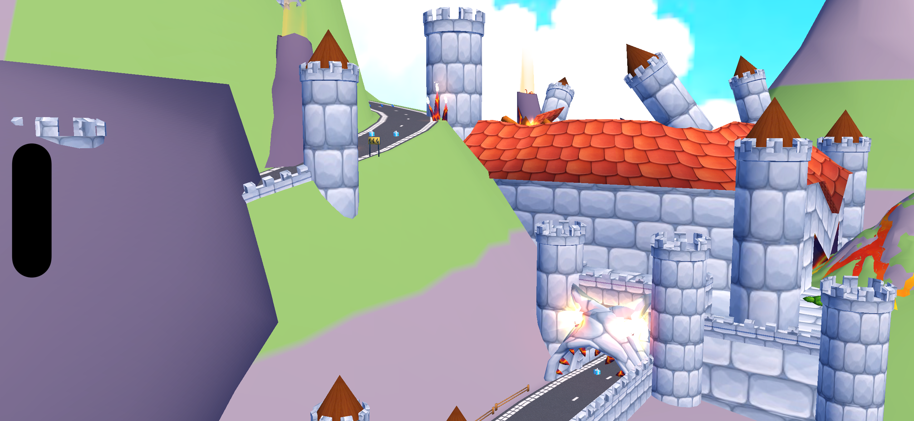
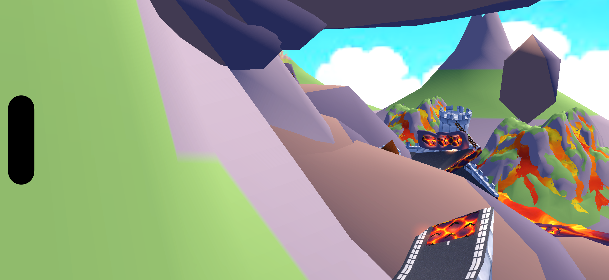
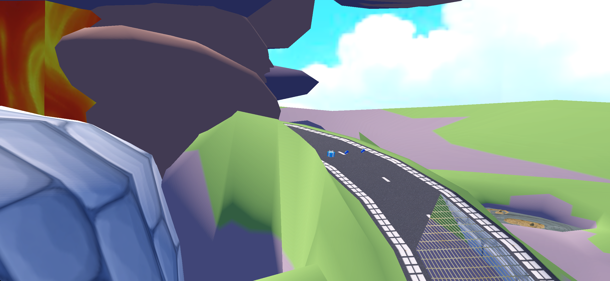

Volcano Remake
Один вулканический замковый стиль: светлый камень, лиловые скалы с зелёными верхами, красные крыши, яркие лавовые потоки и дым. Исходная дорога, игровые точки и линии сохранены.
Изменённый Blender-проект · Геометрия и бюджет · Проверка ресурсов
Статус визуала: технические проверки и игровые кадры собраны, но близкое совпадение с референсом ещё не достигнуто: крупные стены замка и форма атмосферных объёмов требуют дальнейшей работы. Согласование этой версии пользователем не записано.
Референс

| Элемент | Результат |
|---|---|
| Крупные формы | Исходные замок, мосты, вулканы и лавовые поля сохранены. Текстуры камня и лавовых трещин взяты из пула. У входной арки лавовая окраска заменена отдельным каменным материалом. |
| Окружение | 40 зелёных крон на скалах, 12 деревянных ограждений, 5 красно-белых блоков. Все экземпляры ссылаются на общие игровые модели. |
| Навигация | 5 направляющих щитов только у поворотов, обращены к приближающимся машинам прямого направления. Исходные игровые ускорители и их разметка сохранены. |
| Атмосфера | Восемь дымовых моделей получили объёмные округлые клубы. У каждой модели число треугольников остаётся в пределах ±20% от исходного, локальные границы и центры сохранены. Цвета заданы палитрой из SVG; исходные кривые движения сохранены. Пять больших декоративных дымовых эффектов без столкновений отображаются в масштабе 35% от исходного, чтобы не закрывать дорогу и небо. Их позиции, повороты и кривые движения не изменены. Исходные источники огня и света сохранены. |
Визуальное согласование итоговой версии не записано. Композиция исходного маршрута, зубчатый силуэт входной арки и геометрия скал отличаются от иллюстрации. Дым — лёгкие объёмные меши с сохранённой анимацией, без физической симуляции газов. Небо и освещение проще референса; точное совпадение не заявляется.
Кадры из движка







Вес
| Измерение | Результат |
|---|---|
| Исходная папка карты | 30,66 МБ |
| Текущая папка карты | 7,69 МБ |
| Новые общие игровые модели | 0 байт: все пять библиотек окружения уже включены в приложение другими картами |
| Карта со всеми новыми ресурсами | 7,69 МБ, уменьшение на 22,97 МБ |
| Треугольники при подробном LOD | 49,747 → 59,255; +19.11% |
| Распакованное приложение | 294,53 МБ, Debug iOS Simulator. Это не размер IPA или скачивания. |
Новая текстура лавы и асфальта прошла просмотр повторения 3×3. Крыша используется как целый лист в исходной UV-развёртке; её бесшовность не заявляется. Для дыма используется простая палитра; генерированный альфа-спрайт и атлас сохранены как отклонённый черновой источник. Уменьшение веса в этом этапе связано главным образом с разрешением текстур; 62 новых размещения добавляют координаты без копии геометрии на каждый экземпляр. Общая оптимизация и дополнительное наполнение карт 1–10 выполняются отдельным следующим этапом.
Проверки сохранности
Все позиции вершин, нормали и индексы моделей, кроме восьми декоративных дымовых мешей, совпадают. У дымовых мешей изменена форма; их локальные границы, центры и начало координат совпадают с исходными. UV декоративного камня переведены на двухцветную палитру; материал входной арки сменил имя. Дорожная геометрия, UV полотна, невидимые контрольные поверхности, ускорители и обратная рампа сохранены.
track.xml, quads.xml, graph.xml, scripting.as, easter_eggs.xml и музыка совпадают побайтово. Все старые позиции предметов, старты, контрольные линии, размещения библиотек и кривые анимации сохранены. Исходные физические свойства материалов совпадают; удалены старые визуальные карты рельефа/блеска у восьми материалов, три дымовых материала настроены для объёмных непрозрачных клубов. Единственная правка исходных масштабов относится к пяти декоративным дымовым объектам ghost.
У новых экземпляров не найдены вершины в дорожном коридоре до 3,5 м над исходными квадрами. При размещении дополнительно проверялись поверхности и периметры. Это проверка вершин и выборок, а не непрерывный расчёт столкновений.
Итоговый Blender-файл повторно открыт: недостающих текстур нет, 85 частей связанных экземпляров совпадают с экспортными матрицами. Исходные XML встроены в проект; реальные подвижные и статические меши сохранены. Общий каталог повторно открыт, привязки объектов и материалов карт 6–10 проверены. Ресурсы источника, сборки и установленного приложения сверены по SHA-256. Новое превью взято из движка и проверено в карте и кампании.
Проверка заезда
{
"twoLapsBeforeSmokeScale": {
"naturalFinishObserved": true,
"mode": "Time trial, one kart, two laps, no campaign event parameter",
"screenshot": "/Users/motoricallc/Downloads/stk-code-master/output/volcano-remake-rework/screenshots/final-320s.png",
"capture": "/Users/motoricallc/Downloads/stk-code-master/output/volcano-remake-rework/final-capture.json",
"versionBoundary": "Before five ghost smoke scales were reduced and smoke surfaces were replaced with rounded volumes; protected course/gameplay nodes/physical properties are identical"
},
"finalCurrentOneLap": {
"naturalFinishObserved": true,
"mode": "Time trial, one kart, one lap, no campaign event parameter",
"screenshot": "/Users/motoricallc/Downloads/stk-code-master/output/volcano-remake-rework/screenshots/final-current-150s.png",
"capture": "/Users/motoricallc/Downloads/stk-code-master/output/volcano-remake-rework/final-current-capture.json",
"versionBoundary": "Final rounded-volume smoke models and reduced ghost smoke scales; finish screenshot visually inspected"
},
"forceWinsUsed": false,
"reverseDirectionVerified": false,
"campaignSevenKartRunVerified": false,
"performanceMeasured": false
}Все сложности, отдельный заезд события кампании с семью картами и обратное направление не подтверждены; производительность не измерялась. В исходном заезде события кампании на 180-й секунде был круг 1/2 без финиша. Это не основание считать всю кампанию проверенной.